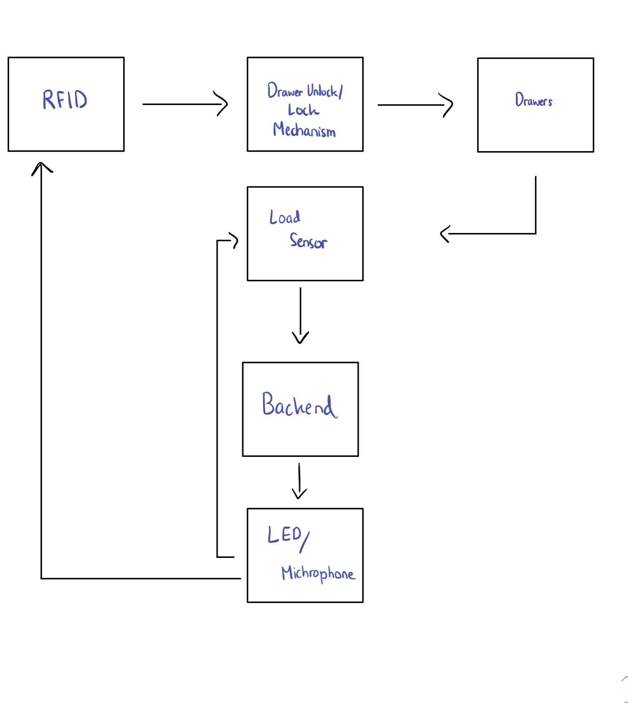

Amazon operates a line of in-person stores named “Go”, where participating users can tap their phones as they enter the shop, pick up items, and pay automatically after their departure.
Why not apply this concept to 6.08 device pickup, which is currently done manually by Teaching and Lab Assistants? As it stands, the Assistants ask a 6.08 student for their Kerb, enter it inside a Google Sheet, and hand them the required device for the lab. In addition to being time consuming and repetitive for the LAs (who would much rather be helping the students), the system also prevents students from being able to access parts all day round (as LAs need to be physically present to assign parts).
Enter “JO-GO”, a self pickup solution for 6.08 LAs and students alike. Course staff use a web app to set limits on how many of each component a student needs, and students enter a self-pickup station, tap their MIT ID, and pick up the components specified from automatic drawers, which open after a tap and close when a session ends. Information on which component a user has is attached to their Kerb and stored in a database. Additionally, students can return components after they have been used, which will reflect in the database as well.
We envision this to be efficient, helpful, and useful to the 6.08 class, eliminating friction for the instructors, TAs, and students alike.
There are multiple components connected to the ESP32 that will be necessary to produce the desired results. The flow starts with an RFID sensor that takes in information from the user’s MIT ID and sends a post request to the server with that information. The user can then walk up to the drawer that holds the item that they want and open it. A limit switch will be attached to the drawer and change state when the drawer opens. In the drawer, there will be X amount of {item} on top of plywood. Under that plywood will be a functioning 1kg load cell that can detect a change in weight of up to 0.0001g. 1 second after opening the drawer, the weight on the load cell will be zeroed. The user can then take out as many of the item as they want. The user will then close the drawer, changing the state of the limit switch. This will prompt a post request to the server that returns whether the amount of that item taken is valid. There are then 3 cases. If the user took less than the allowed amount, a LED nearby will turn green and a “DING” will be played. If the user took the exact number of items allowed, a LED nearby will turn green, a “DING” will be played, and the drawer will lock. If the user took more items than allowed, a LED nearby will turn red, an alarm sound will be played, and all drawers will lock. The locking mechanism will work using a servo attached to the front of the inside of the drawer. To lock the drawer, the servo will rotate 90 degrees.
Hardware:
This client will be communicating through HTTP with the server to get students information, post edits to the information, and securely log users in. Detailed documentation on the endpoints will be in the Server Section below.
In order to display the information in the database, such as items and number of items borrowed by each student, we decided to develop a web application dashboard with authentication. With the authentication, we can display the filtered information depending on the user's access securely, as well as giving different permissions for different user types: staff vs student. For example, 6.08 staff will have both read and write access to all students’ information, but students will only have read access to their own information.
In terms of the tech stack, we will be using Next.js and CSS for efficient and dynamic websites. The web application will include the following pages:
As our server needs to store and display user’s interaction with the marketplace, we need a database that can give both the most recent activity of users, and the history of each “transaction.”
Most of the challenges we face will be on the hardware side. With all of these possible issues we are super open to any kind of advice.
Since we are trying to determine the exact number of items taken using the load sensor, we need to create a system that can adapt to any type of item and not be prone to sudden movements and other physical errors. The adaptability issue can possibly be solved by creating a calibration system for each drawer. Before a drawer is “active,” the load sensor can get an estimate for the weight of one item before the rest are placed inside. The physical error issue might be solved by filtering the received data or binning the signal according to the calibration. There is also the issue of safe wiring and working with the dimensions of the drawer itself when implementing the load sensor. Also, there are many possible difficulties we could run into with the locking system. When should the servo motors unlock and relock? How could we detect mechanical errors? We haven’t used the RFID before as well, so we have to figure out its implementation alongside the ESP32. Given the amount of online resources though, this should not be a huge difficulty.
The work is split so that we each have individual “focuses” but also can cover different parts of the project to understand it as a whole. Reference the milestone timeline for more insights.